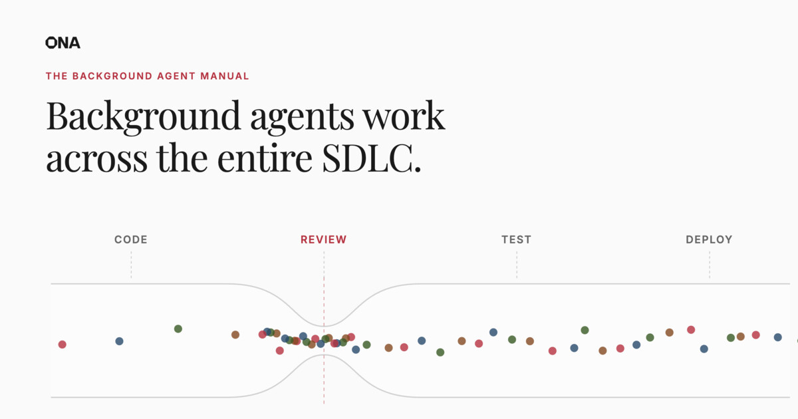

Самоуправляемая кодовая база: Background Agents и новая эра разработки ПО

Background agents работают на всех этапах SDLC
Процессы разработки ПО проектировались вокруг ограничений человека за клавиатурой. Теперь агенты работают автономно, охватывая тысячи репозиториев в фоновом режиме. Этот тренд уже набирает обороты в таких компаниях, как Stripe, которые недавно опубликовали материал о своей платформе Minions, Ramp и Spotify. Старые процессы больше не справляются с этими изменениями. Теперь каждый инженерный лидер задаёт один и тот же вопрос: как перейти от текущего процесса доставки к самоуправляемой кодовой базе?
Наши системы упираются в localhost
Автодополнение превратилось в coding-агентов. Coding-агенты превратились в три coding-агента, работающих параллельно на вашем ноутбуке. Инженеры стали использовать worktrees, всё больше терминалов, запасные Mac Mini. Что угодно, лишь бы запустить больше агентов.
Но localhost не был создан для этого. Агенты конфликтуют за ресурсы машины, секреты оказываются под угрозой, и всё останавливается, когда машина уходит в сон.
Для инди-разработчиков это работает, но для профессиональной инженерии это неприемлемо. Нужно отвязать инженеров от рабочих станций. Агенты должны работать в фоне — безопасно и масштабируемо.
📖 The Last Year of Localhost — Johannes Landgraf, сооснователь Ona
Ложная вершина
Скорость отдельного разработчика ≠ скорость организации
Вы внедрили coding-агентов. Инженеры стали быстрее. Pull request'ы хлынули потоком.
Но cycle time не сдвинулся. Метрики DORA стоят на месте. Бэклог растёт.
Потому что прирост компаундится на уровне индивида, а не организации. Чем дольше вы инвестируете в coding-агентов, не трогая систему вокруг них, тем глубже закапываетесь.
Это и есть ложная вершина.
Ответ: агенты, работающие в фоне
Coding-агент требует вашу машину и ваше внимание. Background agent — ни того, ни другого. Он работает в собственном окружении разработки в облаке: полный тулчейн, тестовый набор, всё необходимое. Полностью отвязан от вашего устройства и вашей сессии.
Запустите его с ноутбука, проверьте результат с телефона. Триггером может быть PR, тред в Slack, тикет в Linear, вебхук — или просто ручной запуск.
Вы не управляете им. Вы не наблюдаете за ним. Это асинхронная задача: делегируйте, уходите, проверьте результат позже. Он работает столько, сколько нужно.
| | Coding agent | Background agent |
| --- | --- | --- |
| Где работает | Ваш ноутбук или локальная машина | Облачная инфраструктура, удалённый запуск |
| Как запускается | Вручную | События, расписания, Slack-сообщения, API-вызовы — любой сигнал |
| Масштаб | Одна задача в одном репо | Множество репозиториев, команд и этапов SDLC |
| Роль разработчика | In the loop — наблюдает, управляет, итерирует | On the loop — ставит задачу, уходит, проверяет результат |
Шаг 01: Создайте примитивы для background agents
Автономным агентам нужна инфраструктура, которой нет на вашем ноутбуке. Описанные ниже строительные блоки — то, что отделяет демо от продакшена: изолированное выполнение, governance, подключение к внутренним системам, автоматизация триггеров и координация флотов агентов. Каждый блок разблокирует следующий.
Среда разработки: агенту нужен компьютер
Агенты, работающие в фоне, нуждаются в собственном окружении выполнения с полным тулчейном, возможностью запускать тесты и доступом к системам через секреты.
Окружения должны быть изолированными и воспроизводимыми, максимально приближенными к продакшену, чтобы обеспечить работу флотов агентов. Всё остальное строится поверх этого.
Паттерн 1: Агент имеет dev-окружение. Агент получает полноценную среду разработки — VM с dev-контейнером, вашей кодовой базой, тестовым набором, базами данных и доступом к внутренней сети. Это максимально близко к тому, как работает человек-разработчик. Каждое предприятие, публично поделившееся своей архитектурой агентов — включая Stripe, Ramp и Spotify — выбрало именно этот паттерн.
Паттерн 2: Sandbox как инструмент. Агент работает на сервере или локально. Когда ему нужно выполнить код, он вызывает отдельную удалённую песочницу через API. Песочница выполняет код и возвращает результат. Это обеспечивает некоторую изоляцию секретов и выполнения, но агент может только выполнять код, а не полноценно разрабатывать. Лучше подходит для компаний, создающих агентские продукты, чем для организаций, улучшающих собственные инженерные процессы.
📖 Don't Build Your Own Sandbox — Lou Bichard, Field CTO at Ona
Governance: enforcement на уровне runtime, а не промпта
Агенты — это акторы в вашей системе. Им нужны те же контроли, что и человеческим контрибьюторам: идентификация, разрешения, аудит-трейлы.
Разница: governance, установленный через системный промпт («пожалуйста, не удаляйте файлы»), — это рекомендация. Governance, установленный на уровне исполнения — deny-листы, scoped credentials, детерминированная блокировка команд — это реальный governance. Без этого команды безопасности заблокируют автономных агентов. И будут правы.
Context & Connectivity: за вашим firewall'ом
Песочница, которая не может обращаться к вашим внутренним системам, — это игрушка. Агентам нужно принимать IAM-роли, запрашивать реплики баз данных, обращаться к внутренним API и тянуть из приватных реестров — всё изнутри вашей сети. Контекст и связность превращают изолированное выполнение в реальную работу.
Триггеры: уберите человека из цикла запуска
Если каждый запуск агента начинается с того, что разработчик набирает промпт, — вы не автоматизировали процесс, а лишь автоматизировали работу. Триггеры связывают агентов с важными событиями: расписаниями, вебхуками, системными сигналами.
- ⏱ Scheduled agents — запуск по таймеру. Предсказуемые, ограниченные, массовые задачи: обновление зависимостей, lint-проверки, контроль покрытия.
- ⚡ Event-driven agents — запуск по системным событиям: открыт PR, опубликована CVE, сработал алерт. Реактивные, конкурентные, всегда на связи.
- ⊞ Agent fleets — одна задача на множество репозиториев. Каждый агент работает независимо и вносит свой вклад.
- ◉ Agent swarms — много агентов, один результат. Каждый агент работает над своей гранью, результаты сходятся в единый деливерабл.
Mobile
Запустите одного или множество агентов прямо с телефона или из iMessage. Одно сообщение — и флот разлетается по задачам. Новый TDD — Taxi Driven Development.
Координация флота: один интент, каждый репозиторий
Обновить один репозиторий — задача coding-агента. Обновить 500 — задача флота. Та же песочница, реплицированная на каждый репозиторий, которому нужны изменения — параллельное развёртывание, отслеживание прогресса, агрегированные результаты. Именно здесь индивидуальная продуктивность превращается в организационную пропускную способность.
Шаг 02: Найдите узкие места в системе
Примитивы дают вам возможности. Где вы их применяете — вот что имеет значение. Это требует работы: опросите разработчиков, посидите с командами, составьте карту того, на что уходит время. Узкие места у каждой организации свои. И те, которые стоит решать первыми, не всегда очевидны.
Код-ревью, которые копятся быстрее, чем когда-либо. PR'ы лежат часами, пока вы переключаете контекст. В масштабе очереди на ревью растут, и lead time остаётся на месте, несмотря на ускорение кодинга. Background agent ревьюит каждый PR до того, как его увидит человек, — и ревьюеры фокусируются на дизайне, а не на форматировании.
Шаг 03: Масштабируйте вашу фабрику ПО
Инженерная организация — это индустриальная система. Сегодня разработчики стоят на каждом участке: пишут, ревьюят, тестируют. Background agents меняют операционную модель. Фабрика работает, но ваши инженеры переходят с позиции *in the loop* на позицию *on the loop*.
- Каждый PR ревьюится агентом до того, как его увидит человек
- CI-фейлы исследуются и чинятся прежде, чем разработчику придёт оповещение
- Разработчики никогда не резолвят merge-конфликты на PR'ах агентов вручную
- Агенты проводят первичное расследование каждого продакшен-инцидента
- Уязвимости безопасности патчатся за часы, а не за спринты
📖 Industrializing Software Development — Christian Weichel, сооснователь Ona
К самоуправляемой кодовой базе
Ваши инженеры не в цикле. Они над циклом.
Фабрика работает. Код пишется, ревьюится, тестируется, деплоится — непрерывно, автономно. Ваши инженеры наблюдают. Устанавливают ограничения. Верифицируют результаты.
FAQ
Можно ли просто запустить coding-агентов в фоне на ноутбуке?
Технически — да, но это не масштабируется. Агенты конфликтуют за ресурсы машины, секреты оказываются под угрозой, а всё останавливается, когда ноутбук засыпает. Для профессиональной разработки нужна облачная инфраструктура.
Какая инфраструктура нужна background agents?
Пять примитивов: изолированное окружение выполнения, governance на уровне runtime, подключение к внутренним системам (за firewall), триггеры автоматизации и координация флотов агентов.
Безопасны ли background agents?
При правильном governance — да. Ключевое: enforcement на уровне исполнения (deny-листы, scoped credentials, блокировка команд), а не на уровне промпта.
Background agents заменяют разработчиков?
Нет. Они меняют роль разработчика с «в цикле» на «над циклом». Инженеры переходят от написания кода к наблюдению, установке ограничений и верификации результатов.
Какие типичные сценарии использования?
Код-ревью, миграция CI-пайплайнов, патчинг CVE-уязвимостей, обновление зависимостей, lint-проверки, миграция легаси-кода (например, COBOL → Java).
Чем background agents отличаются от CI/CD-пайплайнов?
CI/CD выполняет детерминированные, заранее определённые шаги. Background agents принимают решения, адаптируются к контексту и выполняют задачи, требующие рассуждений — от написания кода до расследования инцидентов.
Дополнительное чтение
- Spotify's Background Coding Agent — Part 1
- Context Engineering — Background Coding Agents Part 2 (Spotify)
- Feedback Loops — Background Coding Agents Part 3 (Spotify)
- Why We Built Our Background Agent (Ramp)
- Minions: Stripe's One-Shot End-to-End Coding Agents
- Minions — Part 2 (Stripe)
- Time Between Disengagements: The Rise of the Software Conductor (Ona)
- Industrializing Software Development (Ona)
- Towards Self-Driving Codebases (Cursor)
- Expanding Our Long-Running Agents Research Preview (Cursor)
- The Two Patterns by Which Agents Connect Sandboxes (LangChain)